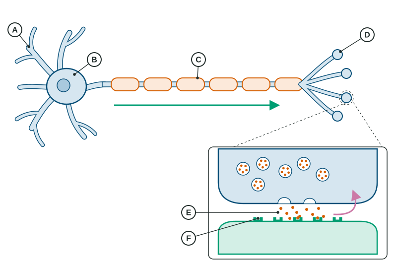

The Neuron and Neural Firing
A neuron collects messages on its dendrites, and if its charge passes threshold it fires an all-or-none action potential down its axon, sped by myelin.
Part 1 · Hook
Why this matters
Part 2 · Before you start
What this builds on
Part 3 · Prerequisite check
Quick check before you start
1. Which part of the nervous system is made of the brain and spinal cord?
- The central nervous system
- The peripheral nervous system
- The somatic nervous system
- The autonomic nervous system
Show the answer
The central nervous system is the brain and spinal cord; everything outside them is peripheral.
- Correct: The central nervous system:
- The peripheral nervous system:
- The somatic nervous system:
- The autonomic nervous system:
2. In an experiment, what does random assignment do?
- Gives each participant an equal chance of being in any group
- Picks participants so they represent the whole population
- Keeps participants from knowing which group they are in
- Measures the variable the researcher changes
Show the answer
Random assignment makes the groups alike at the start, so a difference after the treatment can be blamed on the treatment.
- Correct: Gives each participant an equal chance of being in any group:
- Picks participants so they represent the whole population:
- Keeps participants from knowing which group they are in:
- Measures the variable the researcher changes:
Part 4 · See it
See it first

Part 5 · Step by step
How it works, step by step
- Excitatory messages reach the dendrites and push the charge inside the cell up from about -70 mVthe neuron depolarizes toward threshold
- The charge reaches threshold, about -55 mVa full action potential fires and races down the axon (all-or-none); myelin makes it faster
- The action potential reaches the axon terminalsvesicles release neurotransmitter into the synapse
- Neurotransmitter binds to receptor sites on the next neuronthat neuron is pushed toward firing (excitatory) or away from it (inhibitory)
- Reuptake pulls leftover neurotransmitter back into the sending neuronthe message ends; drugs that block reuptake make it last longer
Part 6 · Key ideas
Key ideas
- A neuron fires an action potential only when its charge passes threshold. Every action potential is the same size (all-or-none); a stronger stimulus means more frequent firing and more neurons firing.
- After firing, a neuron has a brief refractory period when it cannot fire again.
- Know the job of each listed neurotransmitter: dopamine (movement, reward), serotonin (mood, sleep, appetite), norepinephrine (alertness), glutamate (main excitatory), GABA (main inhibitory), endorphins (pain relief), substance P (pain signals), acetylcholine (muscles, learning).
- Hormones travel in the blood and act more slowly and for longer: adrenaline, leptin (full), ghrelin (hungry), melatonin (sleep timing), oxytocin (bonding). The pituitary gland directs other glands.
- Drugs work at the synapse: an agonist mimics or boosts a neurotransmitter, an antagonist blocks it, a reuptake inhibitor keeps it in the gap longer. Repeated use brings tolerance, and stopping brings withdrawal.
Part 7 · Misconception
A common mistake
The wrong idea: A stronger stimulus makes a neuron fire a bigger action potential.
What actually happens: Action potentials are all-or-none: each one is the same size. A stronger stimulus makes neurons fire more often, and more neurons fire.
Part 8 · Check yourself
Check yourself
Exam-style questions. Anything you miss goes into your review queue.
Figure
A neuron and a synapse, parts marked A to F

1. In the figure, which lettered part receives messages from other neurons and carries them toward the cell body?
- The part marked A
- The part marked C
- The part marked D
- The part marked E
Show the answer
A marks a dendrite, the branching fiber that collects incoming signals and passes them to the cell body.
- Correct: The part marked A: Right: A is a dendrite, which receives messages from other neurons.
- The part marked C: C is a segment of myelin sheath, which insulates the axon; it does not receive messages.
- The part marked D: D is an axon terminal, where the neuron sends its message out, not where it receives one.
- The part marked E: E is the synaptic gap, the space between two neurons, not a part of the receiving cell.
2. In a person with multiple sclerosis, the immune system damages the part marked C. What change in neural firing would you predict?
- Signals along the axon slow down or fail
- Neurotransmitter stops being taken back up
- Dendrites stop receiving incoming signals
- The cell body stops making any proteins
Show the answer
C is the myelin sheath. Myelin lets the action potential jump quickly down the axon; when it is damaged, as in multiple sclerosis, signals slow, scramble or stop, which causes weakness, numbness and vision problems.
- Correct: Signals along the axon slow down or fail: Right: damaged myelin slows or blocks signals traveling down the axon.
- Neurotransmitter stops being taken back up: Reuptake happens at the axon terminal and synapse, not at the myelin.
- Dendrites stop receiving incoming signals: Dendrites receive signals; multiple sclerosis attacks the myelin on the axon.
- The cell body stops making any proteins: The cell body keeps working; the problem is how fast the signal travels.
3. A drug blocks the receptor sites marked F, so the neurotransmitter released into E cannot bind there. How is this drug classified?
- An antagonist
- An agonist
- A reuptake inhibitor
- A hormone
Show the answer
A drug that occupies or blocks receptors so the neurotransmitter cannot act is an antagonist: it weakens that neurotransmitter's effect.
- Correct: An antagonist: Right: blocking the receptor stops the neurotransmitter from working, so the drug is an antagonist.
- An agonist: An agonist mimics or boosts a neurotransmitter; this drug stops it from acting.
- A reuptake inhibitor: A reuptake inhibitor keeps neurotransmitter in the gap longer; it does not block receptor sites.
- A hormone: A hormone is a chemical messenger carried in the blood, not a drug that blocks a receptor.
4. A neuron receives a weak burst of excitatory input that raises its charge from -70 mV to -62 mV, then the input stops. What happens?
- It does not fire, because the charge never reached threshold
- It fires a small action potential that matches the weak input
- It fires a full action potential, but more slowly than usual
- It enters its refractory period and is unable to fire for a while
Show the answer
Threshold is about -55 mV. Below it nothing fires; at or above it the neuron fires a full action potential. There is no partial action potential (the all-or-none principle).
- Correct: It does not fire, because the charge never reached threshold: Right: -62 mV is below a threshold of about -55 mV, so the neuron does not fire.
- It fires a small action potential that matches the weak input: There are no small action potentials: firing is all-or-none.
- It fires a full action potential, but more slowly than usual: Action potential speed depends on the axon (such as myelin), not on how strong the input was.
- It enters its refractory period and is unable to fire for a while: The refractory period follows an action potential; this neuron never fired.
5. Marisol touches a warm mug, then a hot stove. Her sensory neurons send a stronger message about the stove. Which change explains how they signal "stronger"?
- They fire more often, and more neurons fire
- Each action potential grows taller and larger
- Each action potential travels a longer path
- The neurons release a different neurotransmitter
Show the answer
Because each action potential is all-or-none, a neuron cannot make a single signal bigger. A stronger stimulus makes neurons fire more often and recruits more neurons.
- Correct: They fire more often, and more neurons fire: Right: intensity is coded by firing rate and the number of neurons firing.
- Each action potential grows taller and larger: All-or-none: every action potential is the same size, whatever the stimulus.
- Each action potential travels a longer path: The path from her hand to the spinal cord is the same length for the mug and the stove.
- The neurons release a different neurotransmitter: A neuron does not switch neurotransmitters to signal a stronger stimulus.
6. A medication slows the reuptake of serotonin, and over several weeks a patient's low mood improves. What does the medication do at the synapse?
- Leaves more serotonin in the synapse for longer
- Blocks serotonin receptors on the next neuron
- Releases a burst of adrenaline into the blood
- Speeds up the firing of motor neurons
Show the answer
Slowing reuptake means serotonin stays in the synaptic gap longer and keeps reaching the receptors. That is what a reuptake inhibitor does.
- Correct: Leaves more serotonin in the synapse for longer: Right: a reuptake inhibitor keeps serotonin available in the synapse.
- Blocks serotonin receptors on the next neuron: Blocking receptors would make the drug an antagonist and weaken serotonin's effect.
- Releases a burst of adrenaline into the blood: Adrenaline is a hormone from the adrenal glands; this drug acts on serotonin at the synapse.
- Speeds up the firing of motor neurons: Motor neuron firing controls muscles; the drug changes serotonin, which is linked to mood.
7. A signal must travel 0.9 meters along a myelinated axon that conducts at 60 meters per second. How many milliseconds does the trip take? (1 second = 1,000 milliseconds.)
Type a number (ms). No calculator needed: work it out by hand, as on the exam.
Show the answer
Time = distance / speed = 0.9 / 60 = 0.015 seconds, which is 15 milliseconds. Without myelin, at about 1 meter per second, the same trip would take most of a second.
- Answer: 15 ms
Part 9 · Summary
Summary
Part 10 · Up next
What comes next
Part 11 · Connections